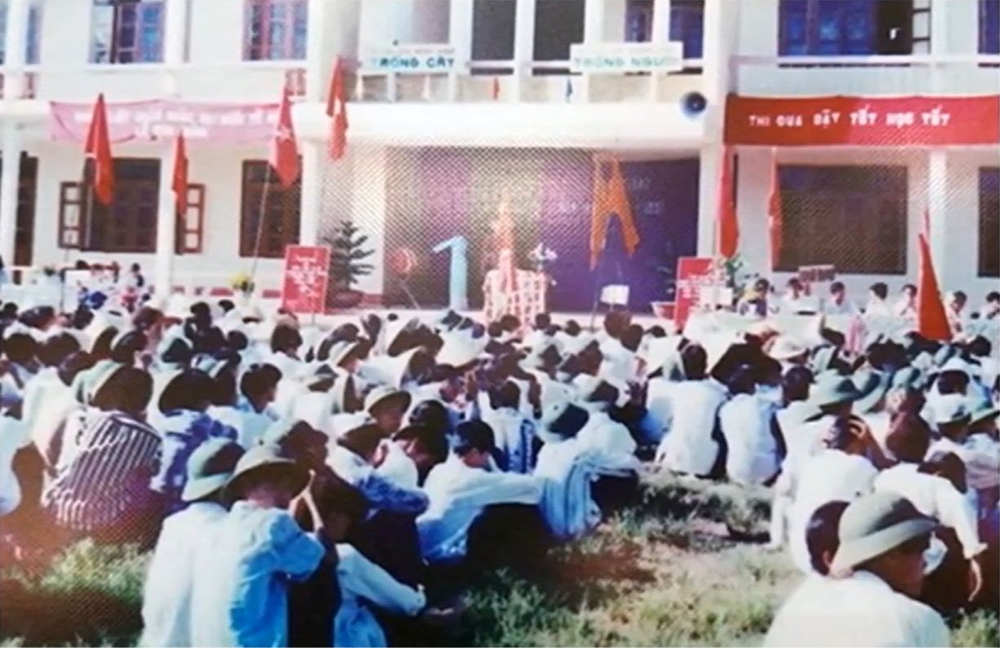
Ảnh tư liệu những năm đầu của trường1991
Trường cấp 2-3 Bố Hạ ra đời
Tháng 1 năm 1991, trường thành lập tại thị trấn Bố Hạ trên diện tích hơn 4.000 m² với 6 lớp học. Hiệu trưởng đầu tiên là cô Nguyễn Thị Chiến.
Đang mở thước phim 35 năm
0%
Tri ân thầy cô 20/11
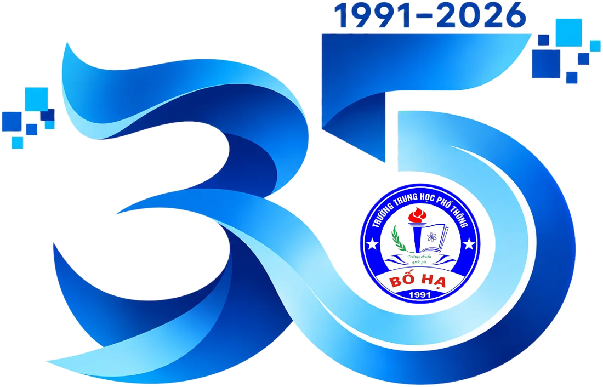
Dạy tốt – Học tốt
Từ 6 lớp học đầu tiên trên mảnh đất hơn 4.000 m² năm 1991 đến ngôi trường 30 lớp, đạt chuẩn quốc gia hôm nay. Nhân Ngày Nhà giáo Việt Nam 20/11, xin kể lại hành trình ấy như một thước phim.
Cuộn xuống để cuốn phim chạy. Mỗi khung hình là một mốc của trường.
Vuốt lên, hoặc vuốt sang hai bên, để cuốn phim chạy.
Vuốt sang trái, sang phải để xem từng mốc của trường.

Ảnh tư liệu những năm đầu của trườngTháng 1 năm 1991, trường thành lập tại thị trấn Bố Hạ trên diện tích hơn 4.000 m² với 6 lớp học. Hiệu trưởng đầu tiên là cô Nguyễn Thị Chiến.
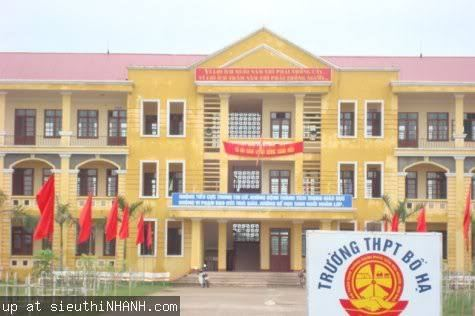
Trường THPT Bố Hạ, ảnh tư liệuTháng 7 năm 2000, trường tách khối cấp hai theo Quyết định số 132/QĐ-UB của UBND tỉnh Bắc Giang. Thầy Thạch Văn Thịnh làm Hiệu trưởng.
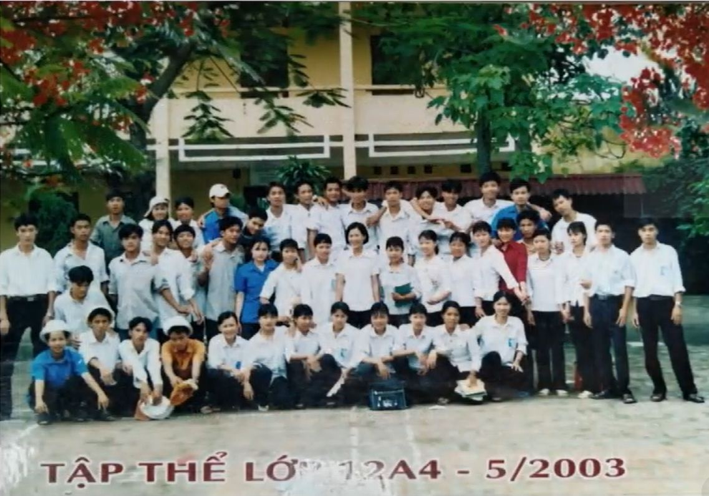
Tập thể lớp 12A4, tháng 5 năm 2003Ảnh tập thể các lớp 12A3, 12A4, 12A5 chụp tháng 5 năm 2003 vẫn được các thế hệ học trò lưu giữ.
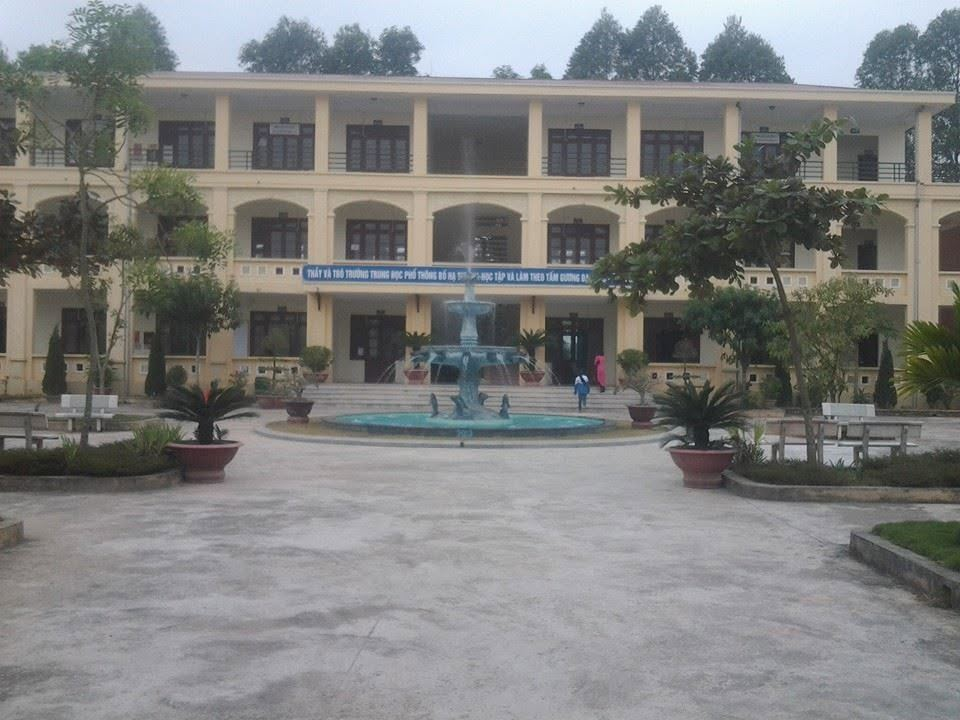
Khuôn viên nhà trườngDự án xây dựng khu trường mới tại xã Bố Hạ, rộng 2,1 ha (nay là 19.738 m²), được phê duyệt.
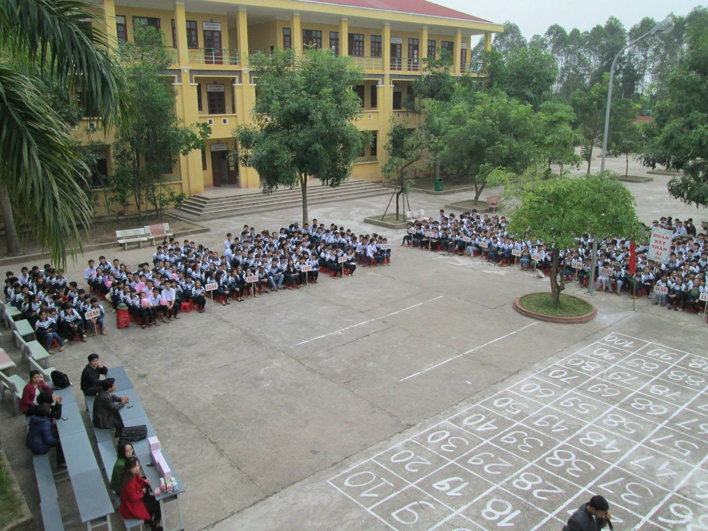
Sân trường mới trong giờ sinh hoạt tập thểNăm học 2010 – 2011, thầy và trò chuyển về học tập trung tại khu trường mới ở Tổ dân phố Đồng Quán. Từ tháng 3/2011, thầy Trần Thanh Hải làm Hiệu trưởng.
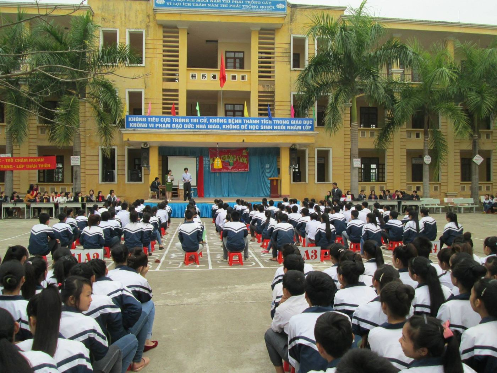
Học sinh xếp hàng trước dãy nhà chínhTrường được công nhận đạt chuẩn quốc gia lần đầu, và tiếp tục đạt chuẩn vào năm 2018.
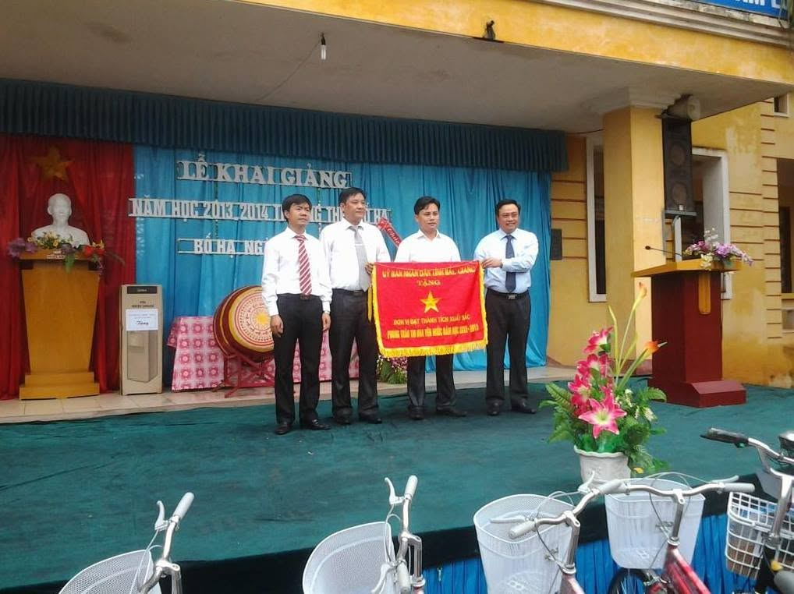
Lễ khai giảng năm học 2013 – 2014, đón nhận cờ thi đua của UBND tỉnhNăm học 2012 – 2013, trường có 23 giải học sinh giỏi văn hóa cấp tỉnh, xếp thứ 7 toàn tỉnh với 2 giải Nhất. Trường đón nhận Cờ thi đua đơn vị dẫn đầu.
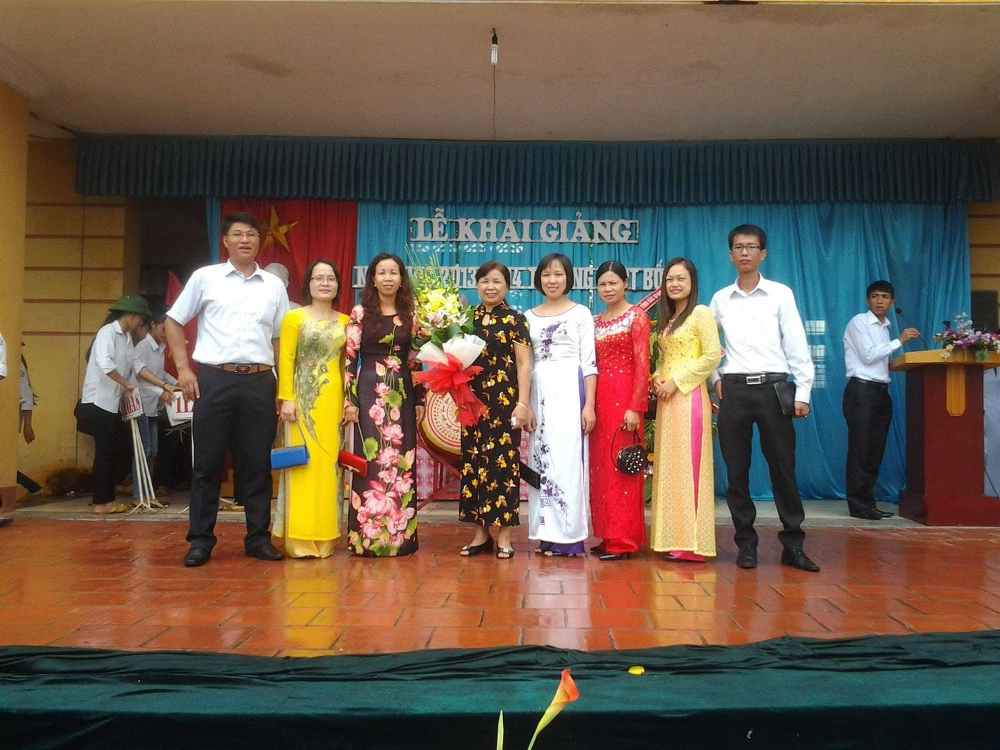
Thầy cô trên sân khấu lễ khai giảngThủ tướng Chính phủ tặng Bằng khen ghi nhận những đóng góp của nhà trường. Năm 2017, trường nhận thêm Bằng khen của Bộ trưởng Bộ GD&ĐT.
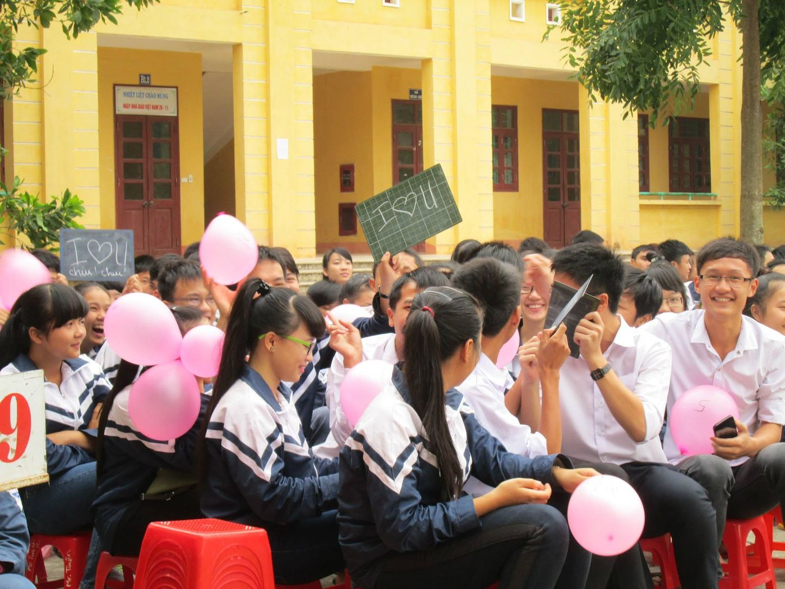
Học sinh cổ vũ trong một buổi lễ của trườngChủ tịch nước trao tặng Huân chương Lao động hạng Ba. Năm học 2019 – 2020, 27 trên 29 học sinh dự thi đoạt giải học sinh giỏi cấp tỉnh, xếp thứ 2 toàn tỉnh về số giải.
Tháng 6 năm 2023, thầy Nguyễn Đình Tâm được bổ nhiệm làm Hiệu trưởng, đẩy mạnh chuyển đổi số và nâng tầm giáo dục mũi nhọn.
Năm học 2024 – 2025, cả 36 trên 36 học sinh dự thi học sinh giỏi văn hóa cấp tỉnh đều đoạt giải. Trường đứng thứ Nhất toàn tỉnh Bắc Giang.
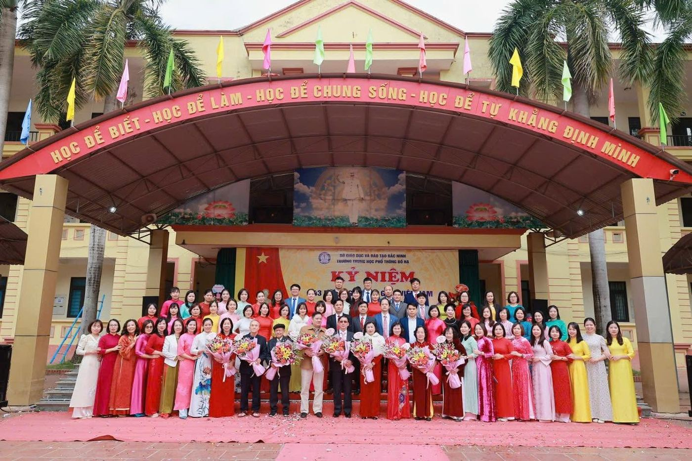
Thầy cô nhà trường trong lễ kỷ niệmTừ 6 lớp ngày đầu đến 30 lớp hôm nay. Ngày 20/11/2026, thầy và trò cùng kỷ niệm 35 năm thành lập trường và 44 năm Ngày Nhà giáo Việt Nam.
Câu chuyện
Nằm trên vùng đất giàu truyền thống của phường Bố Hạ, Thành phố Bắc Ninh, trường THPT Bố Hạ đã đi qua hơn ba thập kỷ hình thành và phát triển. Từ những ngày đầu gian khó, bằng tâm huyết của các thế hệ thầy và trò, nhà trường trở thành một điểm sáng của giáo dục tỉnh nhà, nơi chắp cánh cho hàng ngàn ước mơ.
Tiền thân của nhà trường là Trường cấp 2-3 Bố Hạ, thành lập tháng 1 năm 1991 tại thị trấn Bố Hạ với diện tích khiêm tốn hơn 4.000 m². Trong những năm tháng sơ khai ấy, cô giáo Nguyễn Thị Chiến, Hiệu trưởng đầu tiên, cùng tập thể sư phạm đã đặt những nền móng vững chãi về kỷ cương và chất lượng dạy học.
Tháng 7 năm 2000, một bước ngoặt quan trọng: trường chính thức tách khối cấp hai để trở thành Trường THPT Bố Hạ theo Quyết định số 132/QĐ-UB của UBND tỉnh Bắc Giang. Dưới sự dẫn dắt của thầy Hiệu trưởng Thạch Văn Thịnh, nhà trường bước vào giai đoạn phát triển mới về quy mô.
Để đáp ứng yêu cầu giáo dục hiện đại, năm 2005, dự án xây dựng khu trường mới tại xã Bố Hạ với diện tích 2,1 ha (nay là 19.738 m²) được phê duyệt. Năm học 2010 – 2011, thầy và trò chính thức chuyển về học tập trung tại ngôi trường mới khang trang ở Tổ dân phố Đồng Quán.
Từ tháng 3 năm 2011, dưới sự lãnh đạo của thầy Hiệu trưởng Trần Thanh Hải, trường đạt chuẩn quốc gia vào năm 2012 và 2018, liên tục nhận Cờ thi đua, Bằng khen của UBND tỉnh, của Bộ Giáo dục và Đào tạo và Bằng khen của Thủ tướng Chính phủ.
Tháng 6 năm 2023, thầy Nguyễn Đình Tâm được bổ nhiệm làm Hiệu trưởng, mở ra một chương mới năng động, đẩy mạnh chuyển đổi số và nâng tầm chất lượng giáo dục mũi nhọn.
Thành công của trường hôm nay bắt nguồn từ đội ngũ giáo viên đoàn kết, tinh thông nghiệp vụ, với 29 giáo viên dạy giỏi cấp tỉnh và 100% tổ trưởng chuyên môn là đảng viên. Thầy cô không chỉ dạy chữ mà còn là những người truyền lửa sáng tạo.
Từ mái trường này, bao thế hệ học trò đã trưởng thành, trở thành tiến sĩ, thạc sĩ, kỹ sư, sĩ quan lực lượng vũ trang hay doanh nhân thành đạt. Dù ở đâu, các em vẫn mang theo niềm tự hào về truyền thống “Dạy tốt – Học tốt” của quê hương Bố Hạ.
Hướng tới giai đoạn mới, trường THPT Bố Hạ quyết tâm xây dựng môi trường giáo dục chất lượng cao, hội nhập và hạnh phúc. Với triết lý lấy học sinh làm trung tâm và sức mạnh của sự đoàn kết, nhà trường sẽ tiếp tục khẳng định vị thế, xứng đáng với niềm tin yêu của Đảng bộ và nhân dân địa phương.
Bảng vàng
Thành tích của các thế hệ thầy và trò, theo bài giới thiệu của nhà trường.
Năm học 2024 – 2025, trường đứng thứ Nhất toàn tỉnh Bắc Giang.
Năm học 2019 – 2020, xếp thứ 2 toàn tỉnh về số lượng giải.
Đơn vị dẫn đầu phong trào thi đua các năm 2013, 2014, 2015, 2018, 2020 và 2021.
Do Chủ tịch nước trao tặng; cùng Bằng khen của Thủ tướng Chính phủ (2015) và của Bộ trưởng Bộ GD&ĐT (2017).
Danh hiệu Tập thể Lao động xuất sắc được giữ liên tục nhiều năm, tiêu biểu năm 2022 và 2024.
Đạt chuẩn quốc gia năm 2012 và 2018. Đoàn trường nhận Bằng khen “Đoàn trường xuất sắc” của Trung ương Đoàn.
Truyền thống ấy vẫn đang được viết tiếp. Bấm vào ảnh để xem lớn.
Ngày Nhà giáo Việt Nam
Thầy cô không chỉ dạy chữ, mà còn là những người truyền lửa.
Ba mươi lăm năm, có bao lớp học trò đã đi qua mái trường Bố Hạ, trở thành tiến sĩ, thạc sĩ, kỹ sư, sĩ quan, doanh nhân… Phía sau mỗi bước đi ấy là những buổi giảng bài, những trang giáo án và những lời dặn dò của thầy cô.
Nhân kỷ niệm 44 năm Ngày Nhà giáo Việt Nam 20/11 và 35 năm thành lập trường, chúng em xin gửi lời biết ơn sâu sắc tới các thế hệ thầy cô giáo, cán bộ, nhân viên đã và đang gắn bó với ngôi trường này.
Các thế hệ học trò THPT Bố Hạ
Đội ngũ hôm nay
Đội ngũ đoàn kết, tinh thông nghiệp vụ, với 29 giáo viên dạy giỏi cấp tỉnh. Bấm vào ảnh để xem lớn.
Thạc sĩ Lí luận và phương pháp dạy học bộ môn Sinh học. Từ tháng 6/2023, thầy dẫn dắt nhà trường bước sang chương mới: đẩy mạnh chuyển đổi số, nâng tầm giáo dục mũi nhọn, để mỗi học trò Bố Hạ tự tin vươn xa.
Thạc sĩ Toán học. Thầy cùng Ban giám hiệu chăm lo từng bước đi của chất lượng dạy và học, là chỗ dựa vững vàng cho đội ngũ thầy cô và các thế hệ học trò.
Giáo viên Ngữ văn. Cô mang sự tinh tế, chu đáo của người dạy văn vào công việc quản lý, luôn gần gũi, lắng nghe thầy cô và học sinh.
Giáo viên Vật lí. Cô là người giữ lửa cho phong trào Đoàn, đồng hành cùng đoàn viên trong những hoạt động tình nguyện, văn hóa, thể thao của trường.
Giáo viên Âm nhạc. Thầy sát cánh cùng Đoàn trường trong từng phong trào, giúp mỗi đoàn viên thêm trưởng thành và gắn bó với mái trường.
Bảng tên cuối phim
Các thầy cô hiệu trưởng qua từng giai đoạn, và tên thầy cô đang đứng lớp hôm nay, chạy như bảng tên cuối phim.
Hiệu trưởng đầu tiên, từ năm 1991Nguyễn Thị Chiến
Từ năm 2000Thạch Văn Thịnh
Từ tháng 3 năm 2011Trần Thanh Hải
Từ tháng 6 năm 2023Nguyễn Đình Tâm
Nguyễn Đình Tâm
Ninh Văn Quý
Hoàng Thị Ngọc
Nguyễn Phương Liên
Nguyễn Bắc Hưng
Giáp Xuân Trường
Nguyễn Ngọc Biên
Nguyễn Thị Thu
Nguyễn Thị Thu Quyền
Nguyễn Văn Hiệp
Vi Thị Yến
Đỗ Thị Dung
Đào Thị Thu Hiền
Hán Thị Nguyệt
Lê Thị Tuyết
Hoàng Thị Lý
Vũ Quốc Bảo
Từ Phương Anh
Đặng Thị Vân
Tô Thị Thắm
Nguyễn Thị Khiêm
Nguyễn Đức Thắng
Nguyễn Văn Mạnh
Tô Lan Phương
Đào Thanh Thúy
Ngô Thu Hiền
Nguyễn Thu Hường
Nguyễn Thị Mười
Phạm Thị Tuyết Nhung
Nguyễn Thị Hương
Đỗ Văn Hiếu
Chu Thị Giang
Phạm Thị Hường
Trần Thị Phương
Đinh Thị Luyến
Đoàn Thị Thanh
Nguyễn Quế Hương
Nguyễn Thị Bích Hồng
Lâm Thúy Anh
Trần Thị Bích Thảo
Lương Thị Bích Ngọc
Nguyễn Thị Dung
Vũ Thị Bích Lành
Nguyễn Thị Thu Hương
Đào Thị Thương
Phạm Đức Cường
Lâm Thị Nhẫn
Nguyễn Thị Thêm
Lầu Thị Huyền
Nguyễn Thị Thêm
Nguyễn Trang Ly
Ngô Thị Chiến
Lương Thị Thủy
Bùi Thị Liễu
Nguyễn Thị Chung
Phan Thị Hoa
Nguyễn Thị Lệ Dung
Phạm Thị Nguyên
Phan Thanh Lý
Nguyễn Hồng Trinh
Đàm Văn Vinh
Đỗ Thế Phương
và hàng ngàn học trò
Học sinh lớp A1 – K34Nguyễn Thị Hồng Xuân
Nguyễn Vũ Thu Phương
Trần Thu Hiền
Tư liệu
Những tấm ảnh cũ các thế hệ thầy trò còn giữ lại. Bấm vào ảnh để xem lớn.
Hôm nay
Truyền thống không chỉ viết bằng thành tích học tập, mà còn bằng những ngày hội, những chuyến đi và những việc làm đẹp. Bấm vào ảnh để xem lớn.
Các lớp thi gói bánh chưng, bày gian Tết, để mùa xuân về sớm trên sân trường.
Nhảy sạp, trò chơi tập thể dưới tán cây, trong những ngày hội của trường.
Giải kéo co của học sinh năm 2026, và thầy cô cũng ghi dấu ở các giải thể thao.
Đoàn viên áo xanh trước cổng trường, hỗ trợ thí sinh trong kỳ thi tốt nghiệp THPT năm 2026.
Đại hội chi đoàn đầu năm học, và lễ tổng kết công tác Đoàn, nhận bằng khen.
Thầy trò đồng hành cùng em Lê Trương Long (12A1), nhà leo núi của trường tại Đường lên đỉnh Olympia năm thứ 26, ở Đài Truyền hình Việt Nam.
Những khoảnh khắc chung của thầy và trò, trên sân trường và ở các sân chơi của ngành.